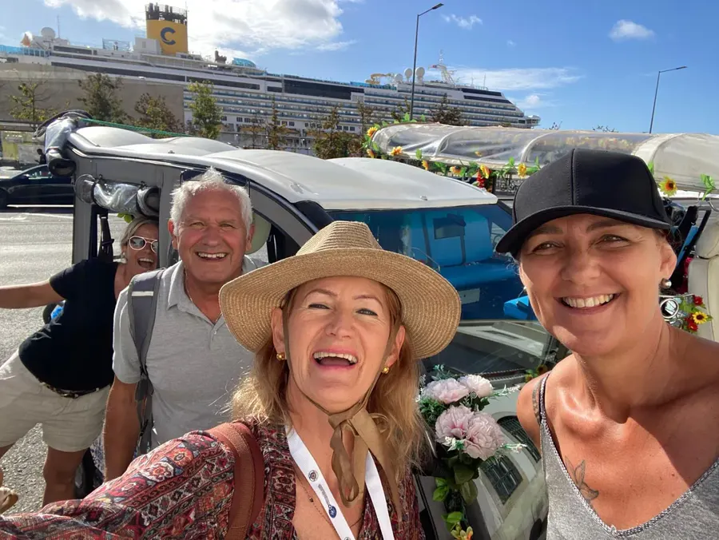

Step off the ship and Susane is waiting for you
LisbonTuk4U picks up cruise passengers at the Lisbon cruise terminal, free of charge, for a private 100% electric tuk-tuk tour with Susane, a certified local guide. Tours last 1.5 to 5 hours and cost €120 to €360 per group (up to 5 people per tuk-tuk, not per person). The route is planned around your all-aboard time and ends back at the terminal.
The cruise terminal sits right next to Alfama: within minutes you are in Lisbon's oldest neighbourhood, with no taxi queues or public transport.
Only your group on board. Stops and pace adapt to you — and to your ship's schedule.
Susane knows the city inside out and plans the route to drop you at the terminal before all-aboard time.
Yes. Pickup and drop-off at the Lisbon cruise terminal are free on every tour.
The tour is planned around your all-aboard time and ends at the cruise terminal. When booking, pick a start time that leaves time to disembark, and send Susane your ship's all-aboard time on WhatsApp.
Message +351 966 697 738 on WhatsApp as soon as you know. Because the tour is private, Susane adjusts the start time whenever the schedule allows.
Between €120 (1 hour, à la carte) and €360 (5 hours), per group of up to 5 people. The 2-hour Historic Centre or Belém tours cost €180. Groups of 6 to 10 people get 2 tuk-tuks and the price doubles.
Yes. Cancellation is free up to 48 hours before the tour. If your ship does not call in Lisbon, message Susane on WhatsApp.